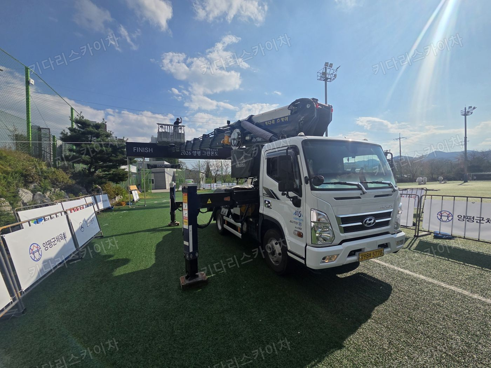
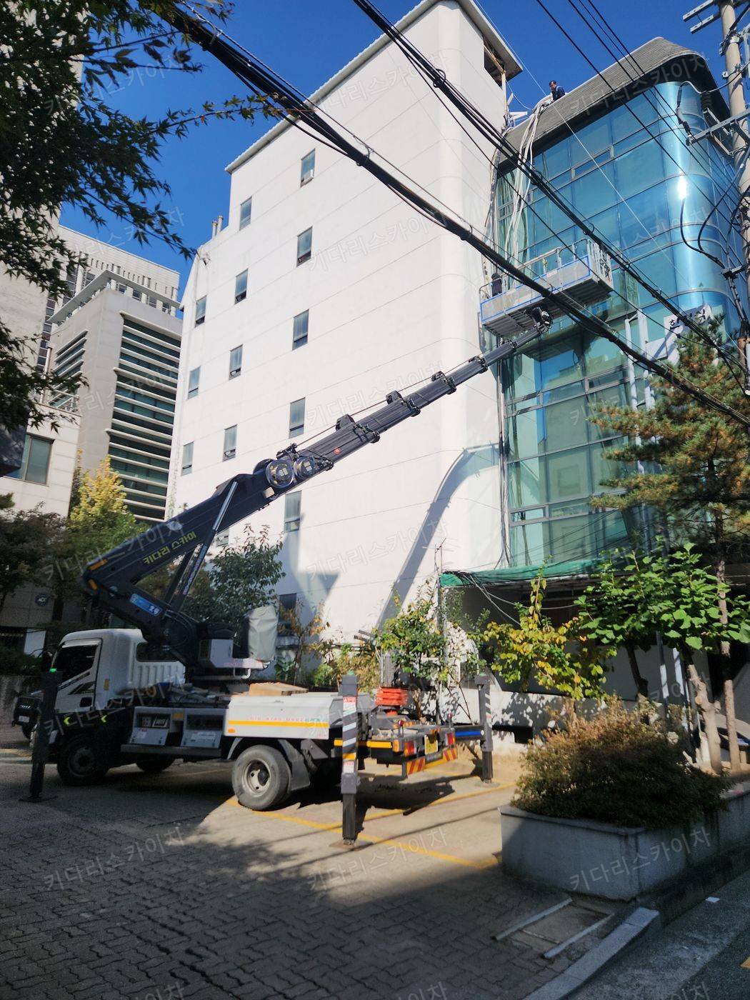
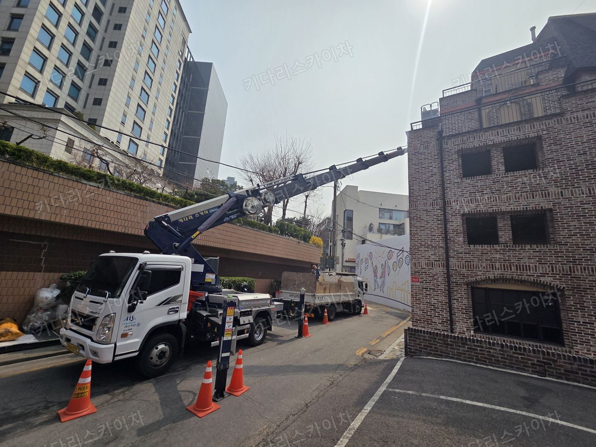
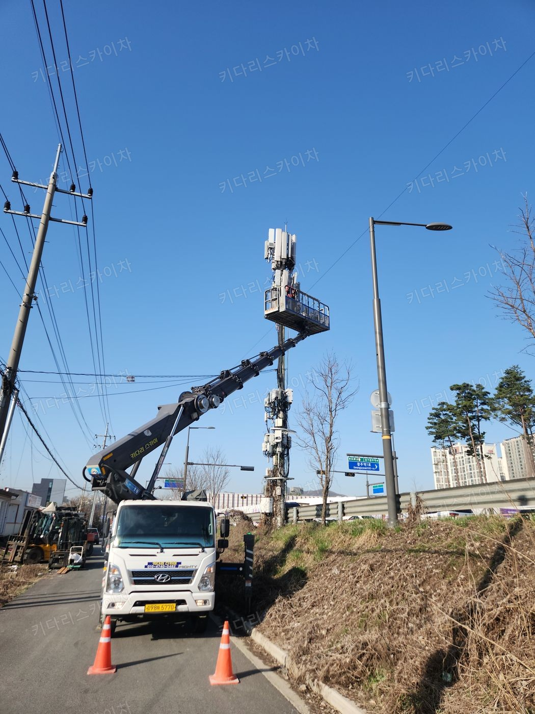
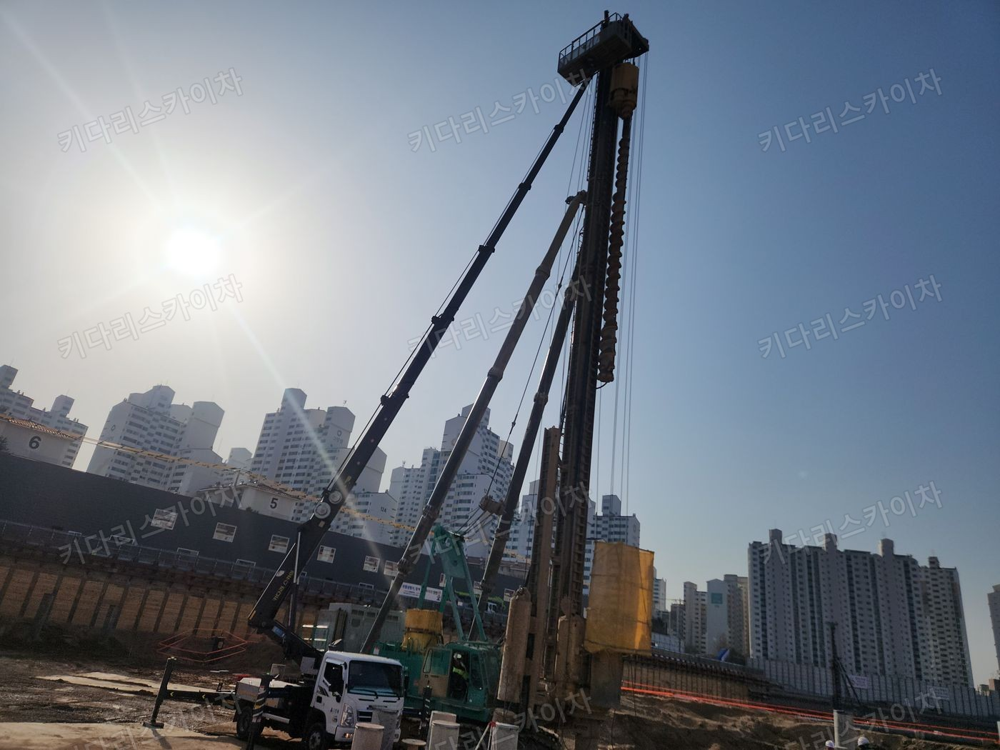
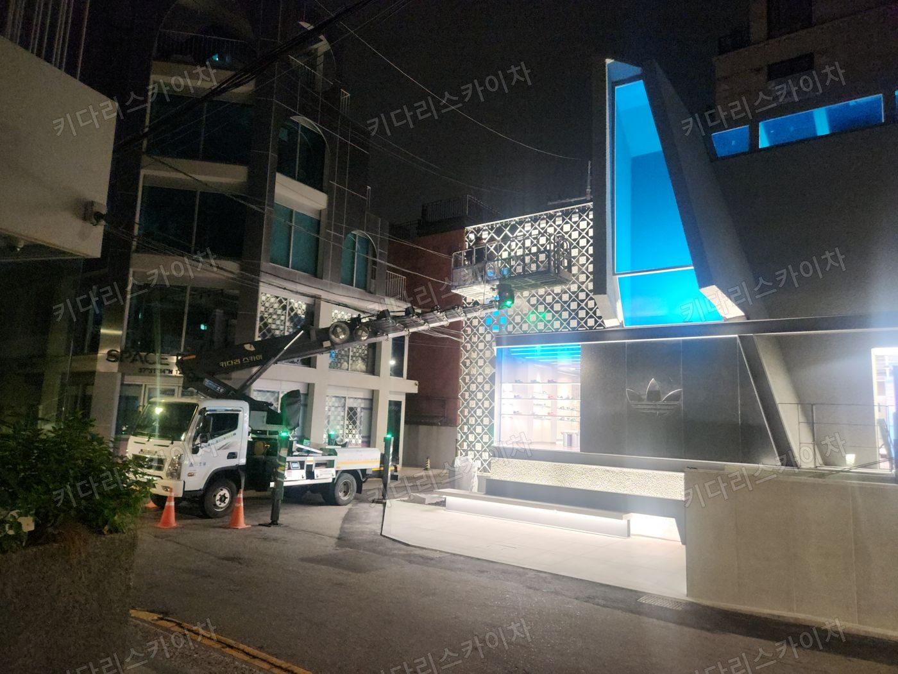
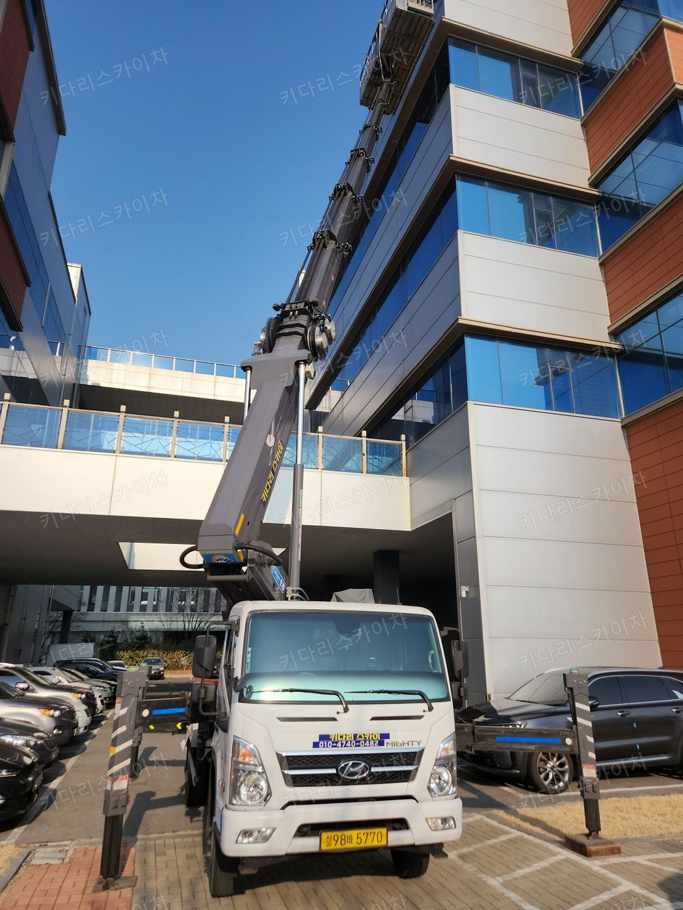
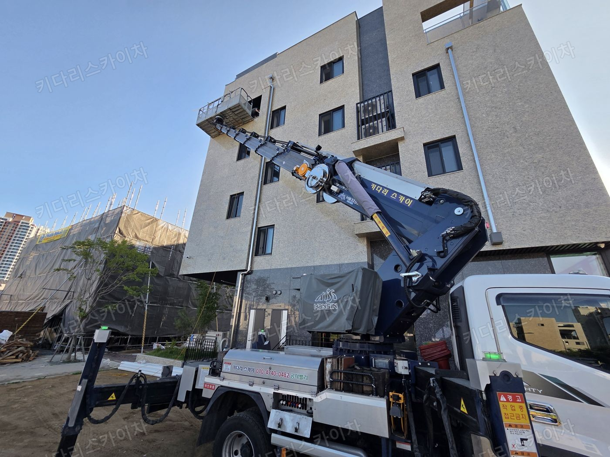

빠른 배차 상담
작업 위치와 차량 일정을 확인해
가능한 배차 시간을 안내합니다.
현장 상황에 맞는 다양한 장비 보유
고소작업 전문 업체, 키다리스카이차
키다리스카이차는 서울특별시 양천구 신월동 현장의 스카이차·고소작업차 임대 상담을 받습니다. 작업 높이와 차량 설치 공간, 희망 일정을 확인한 뒤 적합한 장비와 배차 가능 여부를 안내합니다.
장비 먼저 살펴보기 ↓
현장에 맞는 상담부터 배차까지
작업 위치와 차량 일정을 확인해
가능한 배차 시간을 안내합니다.
높이·거리·진입로를 함께 살펴
작업에 맞는 장비를 상담합니다.
현장 주소와 희망 날짜로
견적과 예약 절차를 확인하세요.
01 / EQUIPMENT
높이만 보지 않습니다.
진입로, 작업 거리, 설치 공간까지 함께 확인합니다.
좁은 골목 · 주택가 · 소형 간판
도심 간판 · 외벽 · 다양한 고소작업
중층 건물 · 외벽 보수 · 설비 작업
높은 외벽 · 대형 간판 · 구조물
LARGE / SPECIAL EQUIPMENT
높은 작업 지점과 대형 현장도 상담하세요.
필요한 작업 높이와 거리, 탑승 인원·하중, 차량 진입로와 설치 공간을 알려주세요. 현장 조건에 맞는 장비 종류와 배차 가능 여부를 확인해 안내합니다.
대형 장비 전화 상담표시 높이는 대표 모델의 최대 작업 높이입니다. 실제 작업 가능 범위는 작업 거리·하중·현장 조건에 따라 달라집니다.
02 / WHAT WE DO
설치, 교체, 철거와
높은 곳의 광고물 작업
외벽 보수와 코킹,
방수 점검 및 페인트 작업
높은 층의 유리 청소,
창호 교체와 유지보수
조명, CCTV, 배관과
통신 설비 설치·점검
높은 가지 정리와 전정,
주변 시설물 확인 후 작업
높은 층고와 지붕 설비,
태양광 설치 및 유지보수
공사 수행 범위와 인력·자재는 상담 시 별도로 확인합니다.
SITE ADDRESS
03 / ON THE FIELD
사진 속 높이보다 중요한 건 현장의 조건.
작업 위치와 차량을 세울 공간을 함께 살핍니다.

FIELD / 01
FIELD / 02
FIELD / 03
FIELD / 04
FIELD / 05
FIELD / 06
FIELD / 07
FIELD / 0805 / HOW TO BOOK
서울특별시 양천구 신월동의 상세 주소와 진입로 폭,
차량을 세울 공간을 확인해 주세요.
필요한 높이와 작업 종류,
자재·탑승 인원을 알려주세요.
장비와 현장 조건을 확인한 후
견적과 가능한 일정을 안내합니다.
QUESTIONS & ANSWERS
서울특별시 양천구 신월동의 도로명 주소, 건물명, 작업 높이와 내용, 희망 날짜·시간을 010-4740-0482로 알려주세요. 같은 지역 안에서도 진입로와 설치 공간이 달라 현장 사진을 함께 확인합니다.
서울특별시 양천구 신월동 현장의 당일배차·빠른배차를 문의할 수 있습니다. 차량 일정과 이동 거리, 현장 설치 조건을 확인한 뒤 가능한 시간을 안내합니다. 주말·야간 일정도 전화로 확인해 주세요.
1톤·2톤·3톤·5톤부터 대형 장비까지 상담합니다. 필요한 작업 높이뿐 아니라 건물과 차량 사이의 거리, 탑승 인원과 자재, 진입로 폭과 지지대 설치 공간을 함께 확인해 장비를 정합니다.
장비 종류, 예상 작업 시간, 작업 높이와 거리, 현장 조건을 확인한 뒤 견적을 안내합니다. 상담 시 작업 내용을 구체적으로 알려주시면 도움이 됩니다. VAT는 별도입니다.
카드결제 예정이라면 예약 전에 미리 말씀해 주세요. 날짜나 작업 내용이 바뀌면 010-4740-0482로 연락해 차량 일정과 변경된 현장 조건을 다시 확인합니다.
LET’S GET TO WORK
키다리스카이차 · 서울특별시 양천구 신월동 스카이차 상담